自媒体文案汇总
目录（2 个栏目 · 28 篇）
- 一、个人小红书
- 【1】infj不是非要自律
- 【2】infj的真空状态
- 【3】infj是一种生活态度
- 【4】INFJ｜小老头的生活哲学
- 【5】INFJ｜当infj被温柔对待后
- 【6】INFJ｜小老头十大至暗时刻
- 【7】INFJ｜小老头都会言不由衷吗？
- 【8】INFJ｜让infj快乐的三件小事
- 【9】INFJ｜收不到消息的小老头真的会焦虑！
- 【9】自恋又自卑的infj
- 【10】infj｜拖延之王or效率之王？
- 【11】INFJ｜小老头都是靠发呆充电的吗？
- 【12】书籍｜INFJ的成长需要一些方法论
- 【13】INFJ｜真的好喜欢infp哦！
- 【14】INFJ｜学设计是什么体验
- 【15】INFJ｜真的很操心小组作业
- 【16】INFJ｜喜欢一个人的表现
- 【17】INFJ｜试着培养钝感力
- 【18】INFJ｜infj收到这种礼物真的会很开心
- 【19】INFJ｜高阶infj与朋友相处？
- 【20】为什么infj擅长学习？
- 【21】infj生活运转的三大妙招
- 【22】infj真的很擅长自我攻略…
- 【23】INFJ｜关于我上辈子是哈基咪五大证据
- 【24】INFJ｜三大自爱方式
- 二、做书（微信公众号）
一、个人小红书
【1】infj不是非要自律
我从前受困于自律魔力，深受其掌控；后来我察觉了自由意志的力量，试图挣脱牢笼。
我不再制定计划，不再强迫自己；我对自己说"没关系"，怎么样都没关系。
我的生活进入了自由，还是陷入了混乱，我不清楚。
再后来，我又拾起了规划，我又遵循起了"自律"。
我不是非要自律，
只是秩序的生活是我的安全基线。
没关系，怎么样都没关系。
【2】infj的真空状态
1.最开心的时刻：即将完成任务前、未来没有新任务诞生。
2.我需要这样一段漫长的充电期。
3.“无聊”是我的礼物。
【3】infj是一种生活态度
1.不要去人多的地方，去树多的地方。
2.我没有最喜欢的事情，非要说的话，是发呆。
3.阅读、电影、散步、练字——被说好像老人。
【4】INFJ｜小老头的生活哲学
1.“人就是活那几个瞬间”
解析：重视你和朋友的聊天、吃的一顿好饭、看的电影、看的书，拉长休息的时间的时间轴，体验情感和精神世界；藐视繁琐的社交、工作，忽视处理讨厌的事情的时间，及时将不爽和怨气抛之脑后，多气一秒都是对自己的不尊重。
2.“人和人的差别有时候就是比人和狗的差别还大”
你有厌蠢症，你无法理解为什么有人听不懂人话，为什么有的人就是不懂礼貌，为什么有的人就爱这么高高在上。把ta当作另外一种生物即可。
2.“善待内心的小孩”
想到什么就去做什么，追随内心的想法，不要被框住了，也不要PUA自己，不要怪自己。举个例子，我现在就是很困好想睡觉，那就去睡觉吧～再举个例子，不要想“我好像没办法把这件事做好，这太难了。”，而要想“没关系的，我已经做的很好了，力所能及已经非常棒了！”
【5】INFJ｜当infj被温柔对待后
1.“你对我这么好，不是我有多好，而是你真的很好。”
2.“你带给我的温情，让我感动得想哭。”
3.“你为我带来了前所未有的美好体验，我也一定会对你这么做！”
4.“多么真诚的人，我要认识你多一点，再多一点。”
【6】INFJ｜小老头十大至暗时刻
1.被琐事缠身，做完琐事没有精力再做自己喜欢的事情.
2.身处三人（半生不熟）以上的空间，无法准确佩戴面具，尬笑应对.
3.被讨厌的、愚蠢的、自大的人小看.
4.emo的时候找不到合适的人倾诉.
5.计划被不可抗因素打乱.
6.忘记带耳机出门.
7.分享的冷笑话的包袱没有被对方get.
8.睡觉前由于头脑无法停止高速运转，失眠并伴随头痛.
9.认识到自己内心的黑暗面，但出于道德感，无法向他人诉说.
10.看到令人窒息的社会新闻但无力改变时，只能逃避不看.
【7】INFJ｜小老头都会言不由衷吗？
范·德·霍普说：
“内倾直觉型的人需要面对一个棘手的问题：他们总是很难找到准确的语言来表达内心感知到的想法。因此，对于这一类人格类型的人来说，他们亟需通过教育来学习表达技能…”
精准又模糊
infj的“直觉”（N）功能往往倾注在人以及与人相关的各种问题上，ta们的“情感”（F）功能又使ta们看起来友好与和善。ta们对于“人”，对于“不同的人”的看法是非常独到又精准的。但是ta们面对朋友进行观点输出时，往往处于“表达矛盾”中。ta们试图寻找精确的词汇，又试图以温和的方式表达，最终又模模糊糊收场。
【8】INFJ｜让infj快乐的三件小事
1.情绪低落吃小甜食
infj常常会因为情绪低落而倾向于食用甜食来寻求一点快乐，因为甜食能暂时刺激多巴胺释放，提升情绪，同时也可将食物视为情感上的安慰和支持。可以尝试一些美味又健康的小食，如菠萝椰椰小果片，既能满足味蕾的需求，又不会给身体带来过多的糖分和热量。
2.认真对待自己的每一餐
infj往往会以认真负责的态度对待自己的事物，这当然也包括了饮食。为了保持心情愉悦，ta们可以将餐饮变成一项令人期待的活动。精心准备的过程会让他们感到满足，从而提升心情。
3.主动养成养生生活
infj通常倾向于深思熟虑，对自身的身心健康有着高度关注。主动养成养生的生活方式将有助于他们维持良好的心情。养成良好睡眠习惯；爱护自己的肠胃，餐后吃膳食纤维；锻炼冥想；和好友聚会，都是维护养生生活的重要方面。
【9】INFJ｜收不到消息的小老头真的会焦虑！
1.情绪敏感性
infj通常对情感非常敏感，ta们很容易被人际关系中微小的变化所触动。长时间的空消息列表会让ta们感到被忽视或遗忘，引发情感上的不安和焦躁。
2.深刻的联系需求
infj倾向于与人建立深入的、有意义的联系。当ta们与某人建立了情感连接后，为了寻求更深的共鸣和理解，ta们期望保持持续的交流。长时间没有收到消息会让ta们怀疑自己的人际关系是否出现了问题。
3.猜测和联想能力
infj倾向于通过直觉和联想来理解周围的情景。当ta们收不到消息时，ta们可能会开始猜测各种可能的原因，回想自己说过的话、相处的模式、聊天是否踩雷……总是会把问题归咎到自己身上。
【9】自恋又自卑的infj
自恋倾向： INFJ可能表现出自恋的一面，这是因为他们常常对自己的内在世界有深刻的洞察力。他们可能对自己的想法、价值观和情感非常自信，可能认为自己的观点和感受比其他人更加深刻和重要。这种内省和洞察力有时会让他们在某些方面表现出自恋的特点。
自卑倾向： 另一方面，INFJ也可能因为他们对自己的高标准和追求感到自卑。他们常常对自己和他人有较高的期望，可能会感到压力和焦虑，担心自己无法达到这些标准。这种自卑可能源自于他们对内在世界的深刻敏感，可能导致他们对自己的能力和价值感到怀疑。
【10】infj｜拖延之王or效率之王？
证据一
infj习惯性在颅内制定计划，每做一件事情时需要想好下一件事情做什么。层层叠加在脑子中，还没做就感到身心俱疲，于是迟迟不愿开始——拖延之王。
证据二
infj一旦开始做一件事情，Ni（内倾直觉）带来的巨大洞察力、归纳能力、顿悟能力会发挥作用，使得infj能又快又好地完成任务，而完美主义倾向也使infj对待任何工作都愿意尽善尽美——效率之王。
证据三
值得一提的是，infj一旦高强度运转了一段时间后，会给自己很长时间来休息，这又导致随即而来的事务被搁置——拖延之王。
【11】INFJ｜小老头都是靠发呆充电的吗？
症状一:坐地铁、坐高铁、……坐任何交通工具都无法做正事，这个时间是发呆的最佳选择。
症状二:失眠时，越是闭着眼睛越是睡不着觉，越睡越累。于是，睁开双眼发会儿呆，过一会儿好像就真的困了。
症状三：排队、走路等任何碎片化时间，infj宁愿发呆来度过，因为这好像是上天的馈赠，如果连发呆的时间都不给自己，真的要累死了！
【12】书籍｜INFJ的成长需要一些方法论
《亲密关系》
感情这个事情真的复杂的很，爱是什么？怎么去爱？如何被爱？infj天生细腻敏感，有时候又显得木讷迟钝。ta们在心里爱得轰轰烈烈，却表现的冷冷淡淡。ta们可能只是还不知道“爱”到底该如何。光在脑子里想可能真的没有出路，试着读读《亲密关系》，碰上你在意的人，可能就知道怎么做了。
《当下的力量》
infj不是不知道当下的重要性，可是“直觉”让ta们往往依靠头脑中的抽象思维联系万物，从而忘记了（或是不愿面对）现实世界的具体情况。遗憾往事，焦虑未来。《当下的力量》这本书恰是用来感受的一本书，不需要刻意去理解，不需要烧脑整理，只是去感受。感受它带给你的“当下的力量”，每一次阅读都是一次深刻的正念练习。
《天生不同》
infj堪称人类观察家/洞察者，遇到一个人，ta们不自觉地会开始分析这个人。ta们给人群分类，从人群取经，自然而然，mbti人格也深深吸引着infj。与其从网上、段子里，搜集零零碎碎的知识；与其从博主、视频那，研究着他人的感悟，不如自己系统地认识一番mbti人格，它是什么时候存在的？它的理论依据是什么？这些字母准确的含义到底是什么？同时，我也相信infj对于这样的知识一定能吸收得很快！
【13】INFJ｜真的好喜欢infp哦！
1.infp的极致温柔 vs infj的敏感内耗
infj真的很喜欢和infp聊天，infp从来不是以客观的、第三方的评价来回应infj的分享，而是将自己带入对方的体验，以第一视角发出感慨和有趣的回应。每一个词、句，都能让infj感受到infp满满的热情和真诚。
infp是细腻的、洞察世事的，infj似乎是能被infp看透的，但是对于infp的看透，infj一点也不反感。因为这种看透的温柔的、关切的，与你相关，也与我相关的。
infj当然也知道啦，infp的极致温柔回应，需要花费infp的许多精力。如果可以，infp们当然不必回回如此，infj能明白。
2.infp vs infj 的孩童灿烂
这个世界上有一个一起陪你可可爱爱、奇奇怪怪的人，真的太棒啦！突然间就一起演起情景剧、互相分享可爱视频、分享奇怪日常……这个世界多么无聊，正是我们的思想，创造出了这么好玩的世界。
3.infp的愤世嫉俗 vs infj的不闻世事
infp面对世界的破碎和道德的沦败，真的很激动，而infj恰是“摆烂”的，无法改变，便就无视。infp似乎是可以激发infj对世界的感官和看法的，而脱离现实世界的infj也正是需要这样的感知。infp与infj互为供给。
【14】INFJ｜学设计是什么体验
-擅长但痛苦
NF型个体兼具人情味和责任心,同时又善于发现各种潜在的可能性, 因此格外引人瞩目。NF型个体既满腔热情又富有远见,他们往往极具语言天赋,不仅能传达出自己的预见,同时也能阐明其中的价值。在那些需要创造性地满足人类需求的行业中,NF型个体往往能够获得成功和满足感。
在NF型的人群中,内倾直觉情感型个体(INF)会耐心、谨慎地构建自己的观念体系,并热衷于寻求永恒的真理。
于是，直觉（N）帮助infj构建设计语言体系，情感（J）帮助infj洞察人类需求，内倾（I）使infj善于内化自己的获得。
然而，infj应对外界的事物使用的是判断（T-F）功能中的情感（F），一旦这件事是infj不喜欢的事情，ta们就会回避退缩。而infj的感知（S-N）功能又主要用于建设内心世界，感觉（S）功能又处于弱势，这使infj遇到压力，会更倾向于回归内部世界，疲于接触外部世界，进一步导致拖延、内耗。
所以，infj天生是擅长设计工作的，但是这种擅长基于工作内容的纯粹性、高尚性。一旦涉及到infj厌恶的东西，比如反复机械劳动、低效交流等，infj就会生出痛苦而逃避。
【15】INFJ｜真的很操心小组作业
1.提前物色队友
每个infj都有厌蠢症吧！于是infj的队友必须靠谱，infj如是说。对于处理日常事务来说，infj还是干练的，对于不同的人擅长做什么，infj也是心中有数的。同时为了使未来的自己能不心力交瘁，infj必会对心水的队友出击，纳入囊中。
2.擅当军师
infj或许是不擅长当leader的，但一定会是个好军师。ta们对事务有足够的全局观，对问题也有多种解决方案。一旦进入工作状态的infj，头脑是极其灵光的，行动力也是极强的（只是后续会需要很长时间来充电）。
同时，身处副位，任职军师，也使infj敢于说出自己的想法和观点，使事务运作下去，同时也不必过于操心队员情绪。
3.无可救药的完美主义
infj很喜欢一个人工作，因为有很强的掌控感，做的不好就自己想办法解决。然而团队做事，就需要涉及到提出建议和协作问题。infj愿意的话，或许也能够做好，可是这样花费的精力，是更多的。归根结底是infj的完美主义，一个项目做的不够好，infj是拿不出手的。
【16】INFJ｜喜欢一个人的表现
-暗波涌动
1.infj喜欢你不会说喜欢你，ta会克服所有的心理负担，在每一个日常间隙来找你聊天。
2.infj喜欢你不会说喜欢你，ta会仔细看你的每一条消息，每一条消息都斟酌到最有趣再回复给你。
3.infj喜欢你不会说喜欢你，ta会克制再克制，你不主动找ta，ta会乖乖做自己的事情。
4.infj喜欢你不会说喜欢你，ta会偷偷给你准备礼物和惊喜，用委婉的明信片，告诉你ta喜欢和你相处的状态。
5.infj喜欢你不会说喜欢你，ta会给你每一条朋友圈都点赞，评论你每一条朋友圈。
6.infj喜欢你不会说喜欢你，ta会见到你就对你笑，见到你就只想跟在你身边。
7.infj喜欢你不会说喜欢你，ta会记下你爱看的书、爱听的音乐，紧跟你的步伐。
8.infj喜欢你不会说喜欢你，ta会分享ta喜欢的一切，并且希望你告诉ta你会去看，会去听。
9.infj喜欢你不会说喜欢你，ta会自己突然变成恋爱脑，和朋友们发疯。
10.infj喜欢你不会说喜欢你，ta会义无反顾地把ta的整个世界送给你，请爱护好这只infj喔！
【17】INFJ｜试着培养钝感力
1.管我p事，管你p事
infj是善良的，是博爱的，是对他人的情绪变化极为敏感的。别人似乎一个眼神、一句话，都会牵动你整个身心的应激——ta是不是看我不顺眼？我接下来如何与ta相处？
实际上infj可以试着把注意力多放在在自己身上。想清楚你现阶段的主要目的，其余的一切都不必在乎，别让那些细枝末节无意义的社交打扰你。
2. 内耗转移大法
infj绝对是mbti中的内耗大师，不过耗自己不如耗别人。所有让你为难的请求、谈话、需求、改动……不要害怕提出想法。当你把话说出去了，开始焦头烂额考虑问题的就是对方了。你宁可做一个对方眼里的“情商低”、“不靠谱”、“不负责”的人呢，你的情商、靠谱、负责，无需用于使你痛苦的人、事上。实际上，打发那些破事情只需要发挥你一点点的善良就够了，比如一段话最后加朵🌹
共勉～
【18】INFJ｜infj收到这种礼物真的会很开心
1.神秘的
infj喜欢惊喜，无论送什么，其实ta们都会开心。比起我告诉你我想要什么，我更希望是你有那份“为我准备惊喜的心”。所以不要担心infj会嫌弃你的礼物，哪怕是便宜的、自己做的有些粗糙的，ta们都会很喜欢！
2.有关我的
infj喜欢分享日常和生活中的奇怪小事，有时候ta们自己都不知道自己不小心透露了什么，比如生活中缺少什么或者想要什么。如果你能敏锐地捕捉到infj潜意识里想要的东西，那实在太博infj好感了！对自己外在生活有些迟钝的infj被细心照顾到了耶！
3.无用的
“无用方为大用”，infj对礼物的要求没有那么高，什么又要实用又要好看，没有。infj对外在的事物其实没有那么关心，ta们关心的是内在，是精神的满足。于是书籍、图册、首饰等，真的是infj的心头爱，不管是什么类型的，放心送，infj对什么都充满好奇心！
【19】INFJ｜高阶infj与朋友相处？
-放过别人，也放过自己
朋友们自有朋友们自己的社交方式，你要知道，你要明白。或许ta们就是同时需要多个不同的朋友，否则ta们就会痛苦，你要包容，就像你得不到偏爱也会痛苦一样。
同时，你要相信你是被偏爱的，你的细腻与偶尔俏皮，值得被珍惜，真的值得。宁愿去埋怨朋友为什么时间不再多分给你一点，不如从细微处发现朋友是怎么把你珍藏在手心的。
-先把自己的世界建设好
infj渴望深邃的、神秘的、哲学的、理性的、感性的、可爱的、舒适的、自然的、松弛的交谈，渴望着灵魂伴侣。会遇到的，真的会遇到的。可是在此之前，先把自己的能量充满吧，你的世界足够完整，你才有底气去接待另一个世界的拜访。
低能量的infj是多么脆弱，受不了一点点“忽视”，脑袋里通通是“我好差劲”“我很无聊”“我不配被爱”。不是的，你要先好好爱自己。
【20】为什么infj擅长学习？
1.试图理解世界
infj看似不关心外界，对现实世界充满排斥，实际上对于世间的运转规律有着极大的好奇心。也或许正是因为这个世界太难以理解，所以infj努力想找到方式去理解。于是，在学习一些抽象概念和思维的时候，似乎总是能够很快理解，这使infj感到欣喜。因此，infj天生的好奇心和探索欲帮助ta们积极获取新的知识。
2.联系万物的能力
可能所有老师都说过“思维导图”的重要性，而infj天生就有“思维导图”的意识。infj相信知识、概念是层级分明、思路清晰的，也相信万物终是联系的。于是infj在学习新知识的时候，会自动把新知识与头脑里的旧知识相联系，形成一张硕大的“思维导图”。
3.内化与讲述
infj喜欢在头脑里思考、判断、评价，这是infj在努力理解新的输入。一旦新的输入与旧有输入形成联系，被infj的大脑接纳，那么新的输入也就内化成功了。
都说把自己想象成老师，把知识说出来能够更好的理解知识点。是的，infj天然地会在头脑里这样做。自己的内在世界必须要有足够的外界输入，才能更好地建设。
4.尽其所能
infj是善良的、是高傲的、是向上生长的。infj对自己的要求非常高，无论是道德方面还是日常事务方面。完美主义是把双刃剑，它或许会让你拖延，但也会让你把学习工作做到你心中的最好。所以我相信infj们，你永远有能力做到你所想要的程度！
【21】infj生活运转的三大妙招
1.避免过度准备
完美主义和理想主义是infj做所有事情的最大绊脚石，没有准备好就无法开始，头脑里列举了无数开始做一件事情的准备清单，光是这一步就已经耗费了infj的大量精力。
开始做吧，把所有“我想做的”、“我需要做的”，都转化为“我当下能做的”。无论失败与否，只有试过了才知道。成功了，那是你足够“想”；失败了，你也又能力去找到问题解决问题。重要的是——开始。
2.不间断输入
infj似乎是冷静的、安静的，可是ta们的头脑里永远在输出，输出评价、批判、思考、权衡、计划、感悟、灵感。有时候会有强烈的“山穷水尽”感觉——无论如何思考，也解决不了自己的问题了。
然而可喜的是，书籍、影视等，是你的知识宝库，你多少大到压得你喘不过气来的问题，或许在前人那里已经解决了。去和前人、大师沟通吧，去汲取新的养分吧，你马上又能够活力满满了！
3.持续追寻热爱
infj好想永远不知道自己想要什么，有人深耕专业领域，乐在其中；有人探索生命，四处冒险；有人有专一的兴趣，有人知足常乐……
然而换一个角度，你的热爱或许就是“持续追寻热爱”，结果真的重要吗？不得而知。与此同时也请不要放弃，相信自己总能发现自己的热爱。找不到也没关系，尽情享受探索的过程！
【22】infj真的很擅长自我攻略…
-暗恋高手
对于面对心上人，infj真的很难主动表白。一方面，infj真的很懒啊！在精巧计算你到底有多喜欢我，我到底有多喜欢你之后，就已经耗费精力了；另一方面，暗恋的微妙感、破碎感，似乎是infj无意中在享受的东西。比起圆满幸福美好、与你真实地相处，好像我更沉溺与和我理想中的你相处…
-暧昧精英
我们天天聊天，我知道有恋爱的错觉，我知道你我互相只是为情感寄托。那就让错觉持续的时间长一点，再长一点吧…
一个“嘛”、一个“～”，就足以在我心中演绎无数个浪漫小剧场了，尽管那可能只是你的习惯用语。我可能需要的也从来不是恋爱，要的只是“聊聊天”，希望我们有一定的距离，也希望我们在漫长的岁月慢慢了解…
-自恋达人
我不相信会有infj没想过“要是我能和自己谈恋爱就好了”，同时也总爱想着，要是ta和我谈恋爱，那ta真的太幸福了。温柔、理智、风趣、可爱的infj，简直是完美人格！前提是我们互相都看对眼了嘿嘿。
-胆小鬼一个罢了
说到底也还是自己太胆小了！只敢在头脑里风暴，却害怕现实世界中的失败。如果有可能，啤酒、电影、海边、落日、草原、游乐园……我多么希望能在现实中和你一起，可是一旦踏出那一步，有可能我“自我攻略”的幻像都要破灭了…
【23】INFJ｜关于我上辈子是哈基咪五大证据
1.独立而内倾
如果有可能，我现在就想远离人类，安居一室。在我的小世界，我可以安顿好我的一切，有秩序且幸福。不是说我胆小或懦弱，以前我或许会误认为是这样，事实是，我根本不愿与莫名其妙的人待在一起！
猫的性格也是如此，通常是相对独立的，懒懒的，不慌不忙.
2.理解而敏感
infj对于周遭世界的、对于他人的情感需求非常敏感，擅长捕捉和理解，所以怎么都说infj是“人类观察家”！
别看猫好像冷冷的不爱搭理你，实际上猫能够感知人类的情感，有时候会出乎你意料地表现出对人类情绪的反应.
3.冷静与理智
infj敏感地察觉到他人的情绪，同时也能在为他们提供情绪帮助时保持十足的冷静与理智。因为这一切都是infj眼中值得参与的有趣游戏，能够丰富自己的情感体验，完善自己的精神世界。当然，在处理琐事时，偶尔可能会出现应激反应——突如其来的烦躁和痛苦，希望infj们在这块都能学会自洽.
你看看猫咪是不是这样，冷静与理智的日常，却在某些突发情况下（甚至是你理解不了的），“突发恶疾”.
4.内心世界丰富
infj通常有一个自己的内心王国，infj自己就是里面唯一的king，不断建设着自己的精神世界，建立着秩序。思考反思，研究世间一切运作的规律。
猫常常被认为是很有内在世界的动物，他们表现出沉思和观察的特点.
5.喜欢哈基咪！
我看看哪个infj不喜欢猫！大多数infj可能对猫有特殊的喜爱和情感联系，因为猫被认为是一种神秘和优雅的动物，这与infj的复杂和充满情感的性格相呼应.
【24】INFJ｜三大自爱方式
1.在属于你自己的时间里好好休息
infj的内倾向特征使我们无时不刻在思考，从而导致过度思考及内耗。然而，内部思考往往是比外部劳动更花费精力的。试着在开始思考的时候停下来，不去批判不去评判，仅仅只是接纳以及，停下来。
2.音乐、阅读、影视
万万不可的是给自己找理由说，“我没有时间读书”“我没有时间看电影”，或许事实是如此，可同样不是如此。
当infj脱离自身，去感受、体验他人的生活、他人的故事、他人的情绪的时候，一定程度上也是摆脱了对自身的内耗。去试试吧，难以改变的从来不是事实，而是你自己的选择。
3.与客观世界建立联结
我一直认为，infj是具有神性的，高共情力或许只是其中一部分。
送给大家一句话：
你生存在这个世界就是要使宇宙的神圣目标得以实现。你看，你是多么重要！
——埃克哈特·托利
焦虑、彷徨、不安、痛苦、无助的时候，走出门看看大自然吧。看看花、草、树再遇到险境的时候是怎么做的；看看鸭子、看看猫、看看鸟，它们没有思维，那它们遇事的反应是什么样的？
试着把自己于自然界联结，看、听、闻、触，去感受。
二、做书（微信公众号）
【1】我在书店打工的15件小事
大家好呀，我是做書西单店新店员小竹。为何来到做書，嗯，我相信这是缘分！作为一名即将步入大四的“设计牲”，接下来大概是与毕设和各类美工图相伴。然而谁让我几个月前因书籍设计课关注了“做書公众号”；谁让我逛了一次“做書图书市集”；谁让我发现可以“加入做書”；谁让“做書”在我开始寻找实习的时候发布了“实习店员招聘”——于是赶工完成了拖欠了很久没有完善的简历和作品集，前来应聘。
（这里还要谢谢做書助我懒人一臂之力）
一切出乎意料得顺利。
所以学设计的为何要来书店呢？也许是很单纯的理由：想有个地方可以光明正大地摸鱼看书，或者是无论如何最好能被书环绕。大三下的暑假被附魔得总让人觉得如临大敌，好像这个暑假不做出一个完美的选择，此后人生便无望了一样。于是干脆跟随自己的心吧！
把前辈写的书店日记，通通浏览了一遍。虽然都戏称为“流水账”，可我觉得要写到这样的程度，也还是需要一些文笔和想象力吧！非常不自信地开始敲字，没关系，既然写了就有稿费...那就请看，以下一个月人类观察实录。
01
面试时，店长提及两次对于“我来书店实习可能学不到什么”的顾虑，短时间内我无法完整阐释我自身对于“本专业学习与实习工作之间关系”的理解和思考。于是短时间内和店长达成“学什么都还是要靠自己”的共识。
...
三天后，意识到了一个极佳的回应方式：别这么说，书店的设计书也够我学一阵子了。
（没学）
02
e人小女孩：
“你们这里有没有《天官赐福》呀？”
“不好意思，没有呢。”
“你知道《天官赐福》吗？”
“我知道，但是我们这儿没有哦。”
（什么，质疑我老二次元的涉猎范围？）
03
旁听到：“质数是什么？我真不知道欸。”
随即开始搜索：质数是几年级的知识点。
（学习热情这个时候高涨什么啊喂）
04
“想问下xxx店在哪儿？”
啊，这类问题果然还是比较生疏。不过好在书店旁边的墙上就有一张地图。引导顾客到地图旁，也算是一名合格指路标了！
（如此安慰自己道）
05
在书店值班的重大感悟：发呆是人生头等大事。
06
“我是学艺术的，经常来咱们店买书~店里折扣也比较大
（4.5折）
，真的挺好的！”
嗯！真的挺好的！
（极致i人如此回应着）
不过遇到健谈的顾客其实心里是想浅聊个天的，如：啊！我是学设计的！
（不过谁知道呢，艺术和设计大概也还有一道鸿沟，幸好没聊。）
07
“拿的书要给别人放好。”
“别在书店喝，到门口喝。”
真是一位很好的妈妈。若天下的家长都是这样的，世界该多么美好。
08
隔段时间就要巡视一下书架，好给空位置补补货。撞见空缺的绘本位置，随意挑选一本可爱绘本奉上~
...
出现了，哇哇大哭的小孩。妈妈随即来到可爱绘本的位置：“宝宝看~这是什么呀？”......居然真的安静了！
【书店兼具哄小孩功能，功德无量】
09
矮柜上一本大部头被买走，留出一个宝贵的空位。找谁来替补呢？看大家都非常喜欢翻阅矮柜上的书...那么画集之类的总不会出错...那么就放上我最喜欢的慕夏吧！
...
幸运，就在当日，一个妹妹翻阅了慕夏，转头问我有没有还未拆封的...当然！
更幸运的是我极清楚地记得展示书架上放着那本未拆封的慕夏。好耶，慕夏值得。
10
一位顾客看到收银台的小绿植，非常惊喜地：
“这花我也有！能开出粉色的小花儿！”
喔？！能开出粉色的小花儿！期待地搓搓手。
11
“《为什么父母这么烦人？》”
每隔一小会儿就会听到门口的这本的书名被大声喊出。
妈妈问小女孩儿：
“你觉得妈妈烦人不？”
毫不犹豫地：
“烦人。”
毫不犹豫地：
“我觉得你也很烦。”
——直抒胸臆的健康亲子关系。
12
40
箱新书！入库的过程会感觉书店变成了一个时光机，突然就到晚上十点了，这也是进入了一种心流状态吧！还好，其实还好，也不是特别累。店长：“你很适合干书店嘛！”
（当然半天是远远干不完的）
亲自入库的书好像更增加了一些亲切感，像给它们接风洗尘了一样。
13
此时已入职第三周，除了要被迫早睡早起
（学校在遥远的昌平）
，以及略疲惫的通勤
（略是因为有懂事的八号线，让我可以坐着近一个小时打盹）
，整体感知上并不觉得特别疲惫。一旦身体进入书店，整个人就平静了下来：啊真好，我可以在这待一整天！
如果整体的生活状态是令人满意的话，一点点小苦就是完完全全可以接受的——日常感恩一切。
14
近年感到自己越来越脸盲了，在书店打工后这种感觉越来越强烈。比如，买好书先在店里放一下一会儿再来拿的一位男生，来拿时又买了一本，然而我又问了一遍是否需要袋子。Sorry！我真的没记住脸！
还是希望能够牢牢记住大家的脸的，遇上熟人心情会变好。
15
小孩哥：“米开朗基罗？是和梵高那个年代的？……我听说米开朗基罗特别崇拜达芬奇？……”
别念了别念了，姐姐我艺术史学得不好
（小声）
最后，他选了一本《时尚编绳技法》，妈妈来结账时，小声吐槽：“他想买这个书，奇怪了。”
从小小的脑瓜看到了大大的世界。
【2】在书店打工，做漫画家的梦
大家好呀，我是小竹。第一篇书店日记后收获了可爱的大家的喜爱，受宠若惊。文字就是有独特的力量吧，无论何时何地，都能把人带入当时的场景，让你们看到我所看到的，感受到我所感受到的，引得同频的人一阵共鸣，实在是一件幸福的事情。
这次的书店日记有些不同，将以漫画的形式呈现给大家。一直以来就有画漫画记录自己日常的想法，奈何笔是不会自己动的。不过既然已经在写书店日记了，不如发挥一下老本行，把文字画成画吧！也一定是有趣的尝试。
漫画形象来源于一次的随手涂鸦小丑兔子，
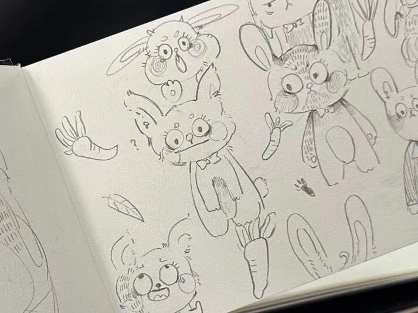
下面，欢迎她的入场。
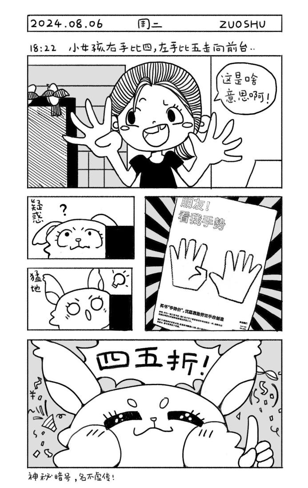
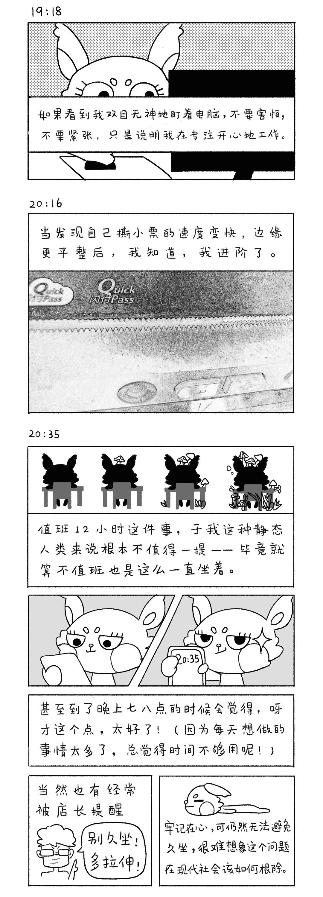
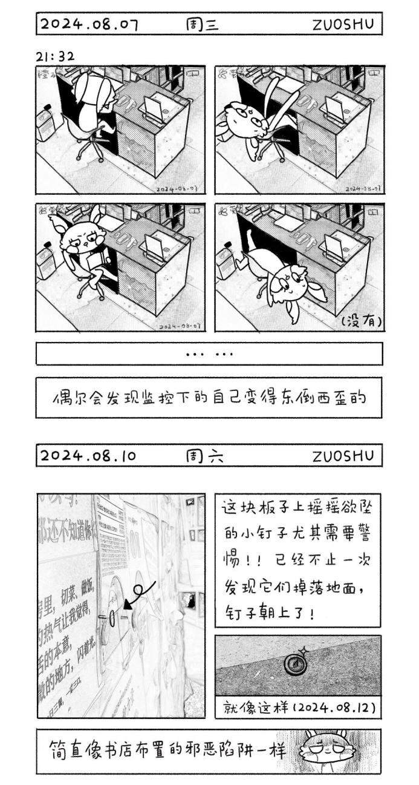
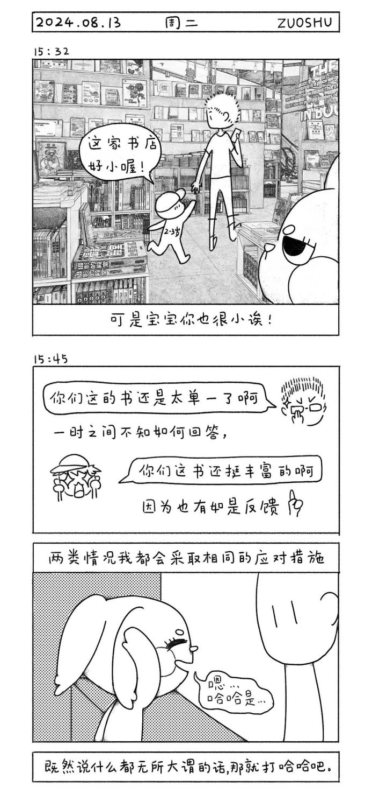
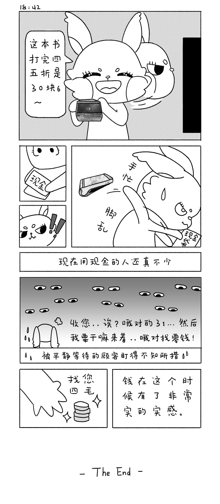
【3】我把书店日记做成了一本小小书
废话不多说，小竹兔的小剧场，action！
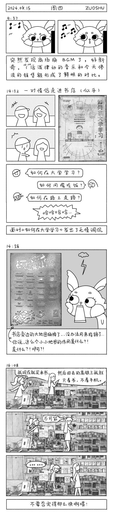
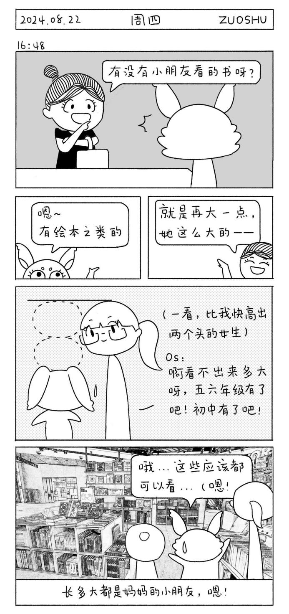
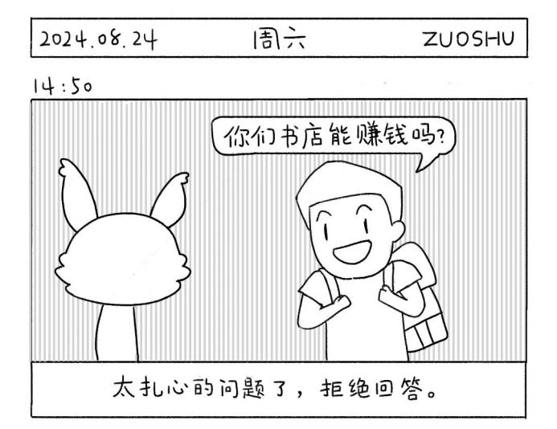
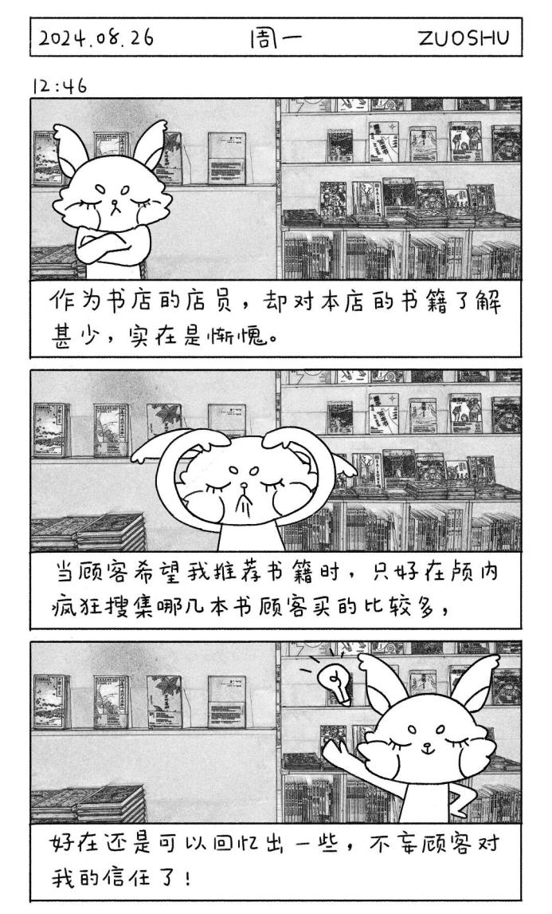
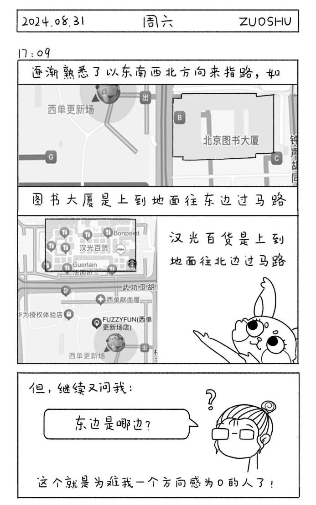
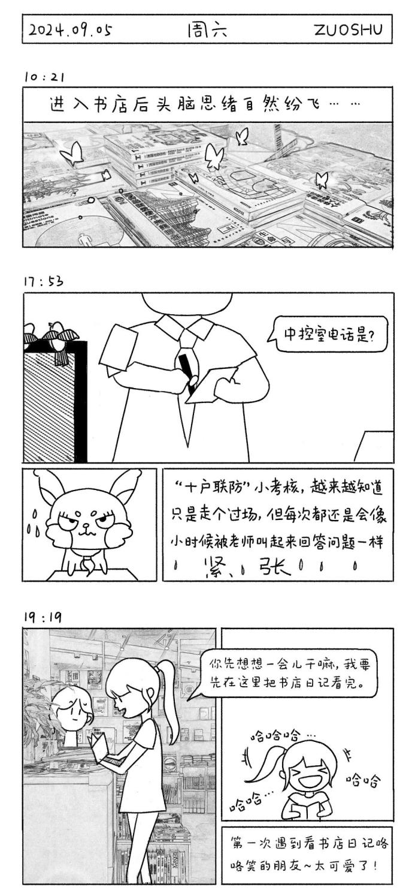
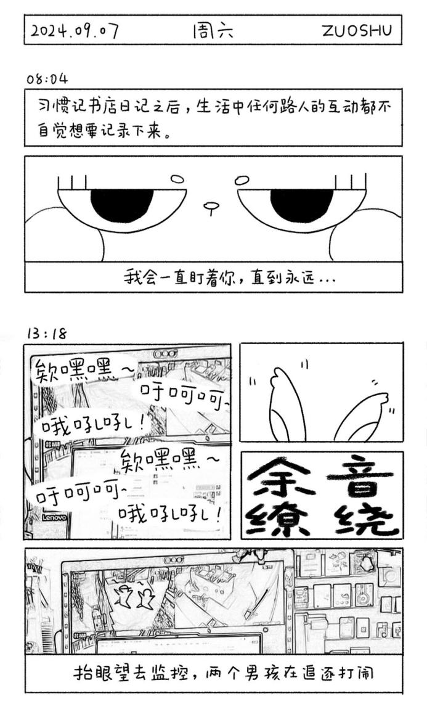
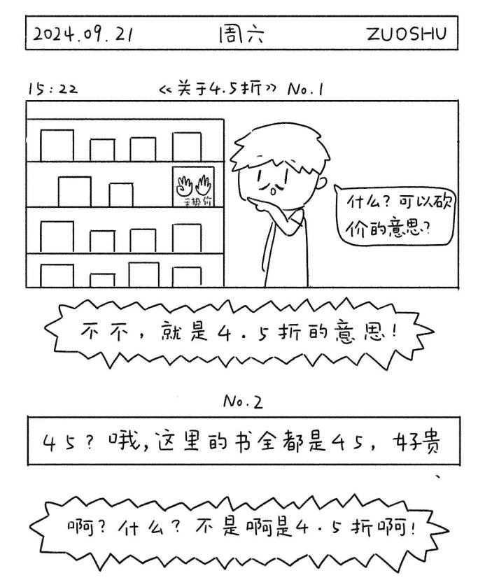
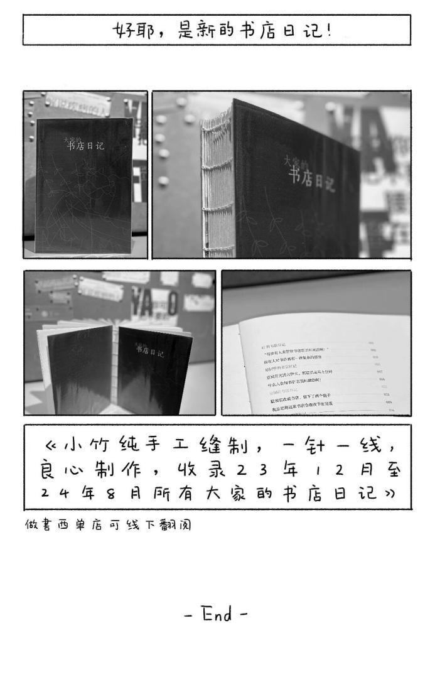